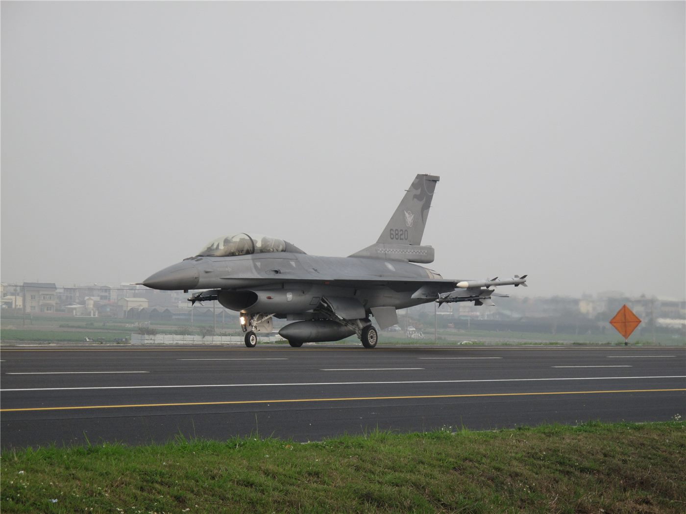

우크라이나 방공망, 요격탄 부족 국면… 키이우 방어에 부담
우크라이나의 패트리엇 요격탄 재고가 줄면서 수도 키이우를 포함한 주요 도시 방공에 부담이 커지고 있다는 지적이 나온다.
정가호 기자 · 2026.08.31
橋국제

패트리엇은 탄도미사일 요격이 가능한 몇 안 되는 체계 가운데 하나다. 순항미사일과 드론은 다른 수단으로도 대응할 수 있지만, 탄도미사일 요격은 대체 수단이 제한적이다.
광고 문의 · 300×250문제는 생산 속도다. 요격탄은 정밀 부품이 많아 생산 라인을 단기간에 늘리기 어렵다. 미국과 유럽 제조사가 증산에 들어갔지만 소비 속도를 따라잡는 데는 시간이 걸린다.
요격탄이 부족하면 방어의 우선순위를 정해야 한다. 발전소와 지휘 시설, 인구 밀집 지역 가운데 무엇을 먼저 지킬지의 문제가 되고, 이는 정치적 판단이 개입되는 영역이다.
겨울철 전력망 공격이 반복돼 왔다는 점도 변수다. 난방 수요가 높은 시기에 발전소가 타격을 받으면 민간 피해가 커진다.
華橋時報는 재고 수준에 관한 구체적 수치를 확인하지 못했다. 군사 물자 재고는 통상 공개되지 않는 정보다.
출처·참고 (사실 확인용 — 본문은 직접 재작성)
· Just Security 2026-08-21 — https://www.justsecurity.org/154807/early-edition-august-21-2026/
· Just Security 2026-08-21 — https://www.justsecurity.org/154807/early-edition-august-21-2026/